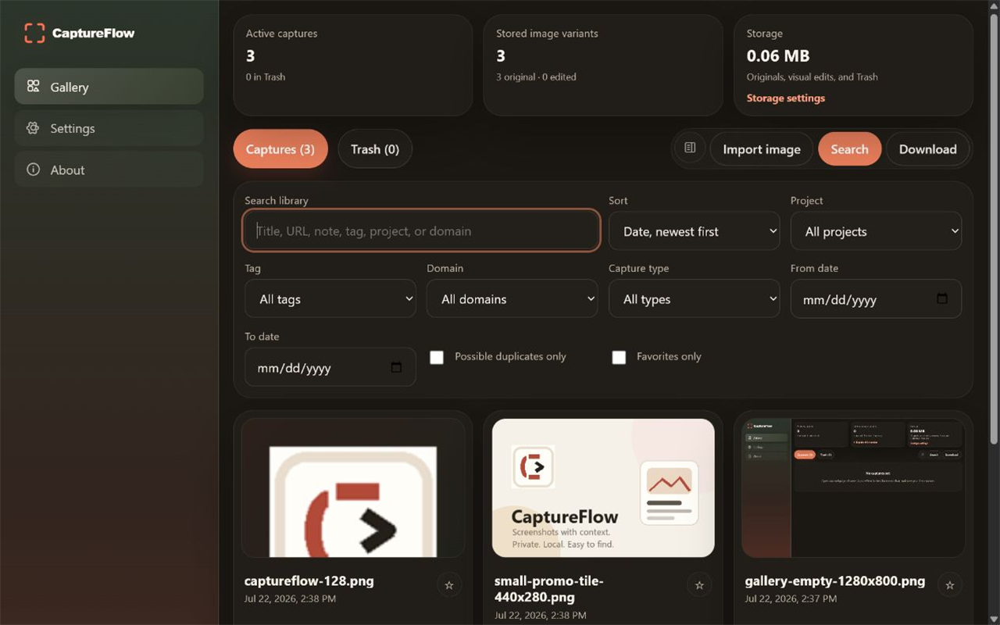

CaptureFlow
CaptureFlowCapture and import
Save the visible area, a selected region, a full page, or an existing local image.
Private by design
CaptureFlow turns screenshots into a searchable local library with annotation, notes, tags, projects, exports, and optional Windows folder copies—without requiring an account or cloud service.

One connected workflow
Save the visible area, a selected region, a full page, or an existing local image.
Crop, draw, highlight, add shapes and text, or obscure sensitive details.
Add notes, tags, and projects, then search or export the records you need.
Official resources
Get help, understand local data handling, troubleshoot common issues, or review the engineering portfolio.